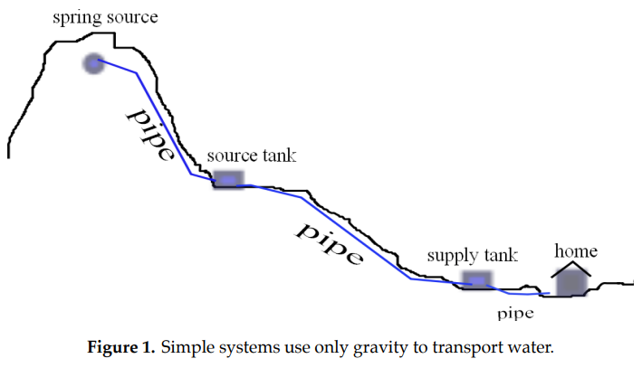

10.2. OLS Linear Regression#
We begin with the familiar topic of ordinary least squares (OLS) linear regression. The table below shows an excerpt of Chicago Public School data for 2011–2012 from the Chicago Data Portal. One expects a higher average ACT score to be associated with a higher percentage of college eligibility.
School zipcode |
Average ACT Score |
College Eligibility |
|---|---|---|
60605 |
25.1 |
80.7 |
60607 |
27 |
91.6 |
… |
… |
… |
60660 |
16.5 |
14.2 |
Source: Chicago Data Portal,
The figure below shows a scatterplot of \(n= 83 \) data points partly reproduced in the above table together with the OLS regression line.
{kind=link}
10.2.1. Least-Squares Solutions#
Consider a collection of \(n\) data points \((x_1,y_1),(x_2,y_2),\dots,(x_n,y_n)\) in \(\mathbb{R}^2.\) We seek the line \(y=c_0+c_1x\) that best fits these data, where \(c_0\) is the \(y\)-intercept of the line and \(c_1\) the slope of the line. As shown in the figure below, an OLS loss function \(J(c_0,c_1)\) sums the squared vertical separations between the data points \((x_1,y_1),(x_2,y_2),\dots,(x_n,y_n)\) and the line \(y=c_0+c_1x\).

If the \(n\) data points are collinear, then there exists an exact solution \((c_0,c_1)\) to the system
In matrix form, this system of equations becomes
where
In general, this linear system with \(n>2\) equations and 2 unknowns (\(c_0,c_1\)) will not have an exact solution. Instead, our goal to find a linear fit to the data is based on a least-squares solution, one that solves the following optimization problem:
10.2.2. OLS LINEAR REGRESSION OPTIMIZATION PROBLEM#
OLS Linear Regression Optimization Problem
Find \((c_0,c_1)\) which minimizes the loss function \(J(c_0,c_1)\) defined as
(The factor of 1/2 multiplying the sum is introduced to simplify the theoretical analysis of the loss function.)
The loss function \(J\) is zero when the points are collinear and situated on the line \(y=c_0+c_1x\); otherwise, \(J\) is positive, since it is half the sum of the squared vertical separations between data points and the line \(y=c_0+c_1x\), as shown in the previous figure.
10.2.3. Minimizing the OLS Loss Function via Normal Equations#
Let \(\mathbf{A}\) be an \(n\times 2\) matrix of real numbers, and let the linear transformation \(\mathbf{L}:\mathbb{R}^2\rightarrow\mathbb{R}^n\) be defined by \(\mathbf{L}(\mathbf{c})= \mathbf{A}\mathbf{c}\), where \(\mathbf{c}\) is a \(2\times 1\) column vector. The range of \(\mathbf{A}\) is the set of all \(n\times 1\) vectors defined by
By choosing \(\mathbf{c}=(1,0)^T\), we see that the first column of \(\mathbf{A}\) (denoted \(\mathbf{a}_1\)) is in the range of \(\mathbf{A}\). By choosing \(\mathbf{c}=(0,1)^T\), we see that the second column of \(\mathbf{A}\) (denoted \(\mathbf{a}_2\)) is also in the range of \(\mathbf{A}\).
Minimizing the loss function \(J(\mathbf{c}) =\frac{1}{2}\|\mathbf{y} - \mathbf{A}\mathbf{c}\|^2\) is equivalent to minimizing \(\|\mathbf{y} - \mathbf{A}\mathbf{c}\|\), the latter being the distance between \(\mathbf{y}\) and an arbitrary vector \(\mathbf{A} \mathbf{c}\) that is in the range of \(\mathbf{A}\) (see figure below). If there is no exact solution (i.e., \(\mathbf{y}\) is not in the range of \(\mathbf{A})\), this minimization is accomplished by choosing \(\mathbf{\hat{c}}\) such that vector \(\mathbf{y}-\mathbf{A}\hat{c}\) is orthogonal to the range of \(\mathbf{A}\). That is, for \(\mathbf{\hat{c}}\) to be a least-squares solution to \( \mathbf{A}\mathbf{c}=\mathbf{y}\), the vector \(\mathbf{y}-\mathbf{A}\mathbf{\hat{c}}\) must be orthogonal (perpendicular) to each vector in the range of \(\mathbf{A}\). Since both column vectors of \(\mathbf{A}\) (namely, \(\mathbf{a}_1\) and \(\mathbf{a}_2\)) are in the range of \(\mathbf{A}\), it follows that \(\mathbf{a}_i\cdot(\mathbf{y}-\mathbf{A}\mathbf{\hat{c}})=\mathbf{a}_i^T(\mathbf{y}-\mathbf{A}\mathbf{\hat{c}})=0\) for each column vector \(\mathbf{a}_i\) of matrix~\(\mathbf{A}.\)

Hence,
The last equation is called the normal equation for the system \(\mathbf{A}\mathbf{c}=\mathbf{y}.\) Solving the normal equations, one obtains optimal values for \(c_0,c_1\).
Example 2.1.#
Example 2.1
Consider the data \((-1, 1)\), \((0, 0)\), \((1, 2)\), \((2, 3)\). Use the normal equations to find the OLS regression line for the data.
Solution.
The system is
or, in matrix form,
The normal equations are
or
The least-squares solution is therefore \(c_0=11/10\), \(c_1=4/5.\)
10.2.4. Equivalence of Gradient-Based Optimization#
Note that the normal equations are equivalent to gradient-based minimization of the OLS linear regression loss function \(J(c_0,c_1)=\frac{1}{2}\sum_{i=1}^n (y_i-(c_0+c_1x_i) )^2\):
The normal equations are equivalent to setting both partial derivatives of \(J\) equal to zero, as is required to minimize the loss function \(J(c_0,c_1)\).
Example 2.2.#
Example 2.2
For the data points in Example 2.1, show how gradient-based optimization of the loss function \(J\) gives the same values for \(c_0\) and \(c_1\).
Solution:
The loss function \(J(c_0,c_1)\) is
To minimize \(J\), we solve the linear system for \(\nabla J(c_1,c_2)=\mathbf{0}\):
Solving this system, we obtain \(c_0=11/10\) and \(c_1=4/5\).
The system used to find these critical values is equivalent to:
Gradient-based optimization expressed is indeed equivalent to the normal equations.
To say that solving the normal equations is mathematically equivalent to gradient-based optimization of the OLS loss function does not imply that the normal equations offer the best numerical method for optimization of the loss function [Epperly 2022]. Beyond the scope of this Module is an assessment of different numerical approaches such as gradient descent and its variants including the Adam method [Sun et. al. 2019], matrix factorizations such as \(SVD\) or \(QR\) [Aggarwal 2020], and mean-centering and standardizing data [Toth 2020].
In addition to facilitating numerical analysis, mean-centering simplifies the linear algebra approach. Mean-centered data is obtained from a collection of data points by replacing the original dataset \((x_i,y_i)\) with the data points \((x_i-\bar{x},y_i-\bar{y})\), \(i=1, \dots n\), where \(\bar{x}\) and \(\bar{y}\) are the respective means of the \(x\) and \(y\) coordinates of the original data. One can show that for mean-centered data, \(\hat{c}_0=0\), and the regression line is \(y = \hat{c}_1 x\). Let \(\mathbf{x}=(x_1,x_2,...,x_n)^{tr}\). For mean-centered data, the regression vector \({\bf \hat{y}}=\hat{c}_1\mathbf{x}\) is obtained by projecting the vector \({\bf y}\) directly onto the vector \({\bf x}\) as shown in the figure below.

The variation equation states that the total variation in the y-values is the sum of the explained variation (variation in the corresponding \(y\)-values on the regression line) and the unexplained variation (the sum of squared residuals or twice the value of the loss function \(J\)). For mean-centered data, the total variation is \(\mid\mid \mathbf{y}\mid\mid^2\), the explained variation is \(\mid\mid \hat{c}_1\mathbf{x}\mid\mid^2\) and the unexplained variation is \(\mid\mid \mathbf{y} -\hat{c}_1 \mathbf{x}\mid\mid^2\). In other words, the variation equation for mean-centered data is simply the Pythagorean theorem.
10.2.5. Exercises#
Exercises
Consider the data \((1, 0)\), \((4, 5)\), \((7, 8)\). Use the normal equations to find the least-squares solution line \(y = a + bx\) that best fits the data.
Consider the data \((-1,1)\), \((0,0)\), \((1,2)\), \((2,3)\). Use the normal equations to find the least-squares solution for the parabola \(y=a+bx+cx^2\) that best fits the data.